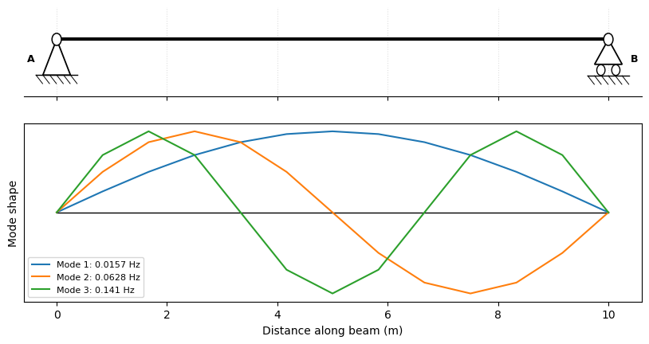
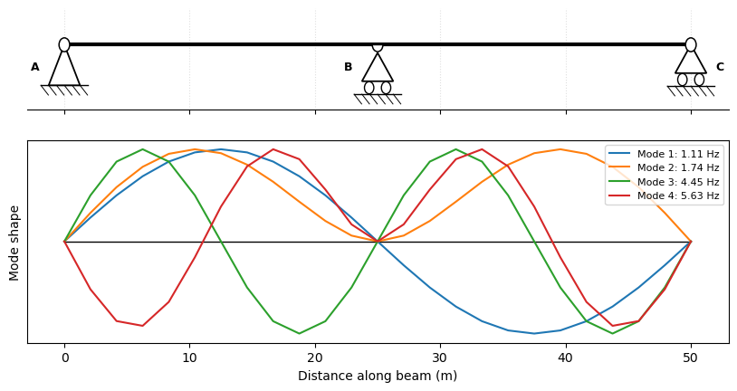

Free-Vibration (Modal) Analysis#
BeamAnalysis.modal() returns the natural frequencies and mode shapes of a beam. It assembles a consistent mass matrix alongside the stiffness matrix and solves the generalized eigenproblem
refining each span into nseg Euler–Bernoulli sub-elements so the higher modes are captured accurately. Supply the mass per unit length (in units consistent with EI); supports — including elastic springs — are taken from the beam, and the analysis is independent of any applied loads.
The result is a ModalResults carrying the frequencies (omega rad/s, f Hz, periods s) and the mode shapes, drawn with ``plot_results()`` (the beam schematic above the mode shapes) or ``plot_modes()`` (mode shapes only).
Supported for prismatic, fixed-fixed members without shear flexibility (GAv).
[1]:
import numpy as np
import pandas as pd
import matplotlib.pyplot as plt
import pycba as cba
Example 1 - Simply-supported beam#
For a prismatic simply-supported beam the natural circular frequencies are the standard textbook result
We first evaluate this analytically, then obtain the same frequencies from PyCBA — keeping the two separate.
[2]:
# Theory: the analytic natural frequencies
L, EI, mbar = 10.0, 1.0, 1.0 # length, EI, mass/length (consistent units)
n = np.arange(1, 5)
omega_exact = (n * np.pi / L) ** 2 * np.sqrt(EI / mbar)
f_exact = omega_exact / (2 * np.pi)
f_exact
[2]:
array([0.01570796, 0.06283185, 0.14137167, 0.25132741])
Now solely the PyCBA usage — build the beam, supply the mass, and call modal(). plot_results() shows the mode shapes against the beam schematic:
[3]:
# PyCBA: build the beam, run the modal analysis
modal = cba.BeamAnalysis([L], EI, [-1, 0, -1, 0]).modal(mass=mbar, n_modes=4)
print(modal)
modal.plot_results();
ModalResults(4 modes; f [Hz] = 0.01571, 0.06284, 0.1414, 0.2515)

The computed frequencies match the analytic values closely:
[4]:
pd.DataFrame(
{"PyCBA f (Hz)": modal.f, "exact f (Hz)": f_exact},
index=[f"mode {i}" for i in n],
).round(5)
[4]:
| PyCBA f (Hz) | exact f (Hz) | |
|---|---|---|
| mode 1 | 0.01571 | 0.01571 |
| mode 2 | 0.06284 | 0.06283 |
| mode 3 | 0.14141 | 0.14137 |
| mode 4 | 0.25153 | 0.25133 |
Example 2 - Two-span continuous bridge#
A two-span continuous bridge in SI units (N, m, kg). modal() returns omega (rad/s), f (Hz) and the natural periods (s); plot_results() shows the mode shapes against the bridge schematic — note the symmetric / antisymmetric pairs typical of a two-span deck.
[5]:
E, I = 2.1e11, 1.4e-3 # Pa, m^4 (steel girder)
mbar_b = 1500.0 # kg/m (girder + deck)
bridge = cba.BeamAnalysis([25.0, 25.0], E * I, [-1, 0, -1, 0, -1, 0])
modal_b = bridge.modal(mass=mbar_b, n_modes=4)
for i in range(modal_b.n_modes):
print(f"mode {i+1}: f = {modal_b.f[i]:6.3f} Hz (T = {modal_b.periods[i]:.3f} s)")
modal_b.plot_results(modes=[0, 1, 2, 3]);
mode 1: f = 1.113 Hz (T = 0.899 s)
mode 2: f = 1.738 Hz (T = 0.575 s)
mode 3: f = 4.451 Hz (T = 0.225 s)
mode 4: f = 5.633 Hz (T = 0.178 s)

Example 3 - Mesh density (nseg)#
Each span is internally meshed into nseg Euler–Bernoulli sub-elements (default 12); one element per span would resolve only the first mode or two. The higher the mode, the finer the mesh it needs. Pass nseg= to control it — here we watch the 4th mode of the simply-supported beam of Example 1 converge to its analytic value as nseg increases (the consistent mass matrix approaches from above):
[6]:
mode = 4
f4_exact = (mode * np.pi / L) ** 2 * np.sqrt(EI / mbar) / (2 * np.pi)
rows = []
for nseg in (2, 4, 8, 16, 32):
f4 = cba.BeamAnalysis([L], EI, [-1, 0, -1, 0]).modal(mass=mbar, n_modes=4, nseg=nseg).f[3]
rows.append((nseg, f4, 100 * (f4 / f4_exact - 1)))
df = pd.DataFrame(rows, columns=["nseg", "f4 (Hz)", "error (%)"]).set_index("nseg")
print(f"analytic f4 = {f4_exact:.5f} Hz")
df.round({"f4 (Hz)": 5, "error (%)": 2})
analytic f4 = 0.25133 Hz
[6]:
| f4 (Hz) | error (%) | |
|---|---|---|
| nseg | ||
| 2 | 0.31958 | 27.16 |
| 4 | 0.27895 | 10.99 |
| 8 | 0.25232 | 0.39 |
| 16 | 0.25139 | 0.03 |
| 32 | 0.25133 | 0.00 |
Notes#
The mass is a mass per unit length, in units consistent with
EI(e.g. kg/m withEIin N·m², giving frequencies in Hz).nseg(default 12) sets the sub-elements per span; the first several modes are already well within 1% with the default, while higher modes need a finer mesh (Example 3).plot_results()draws the beam schematic above the mode shapes;plot_modes()draws the mode shapes alone — both accept amodes=list and aunits=argument.Supported for prismatic, fixed-fixed members without shear flexibility (
GAv); elastic spring supports are included. Other combinations raise a clearNotImplementedError.